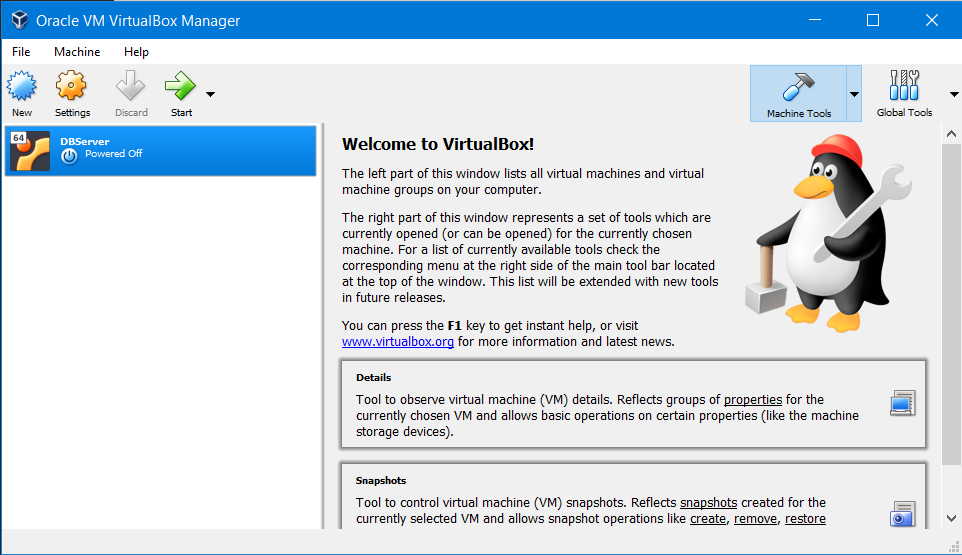
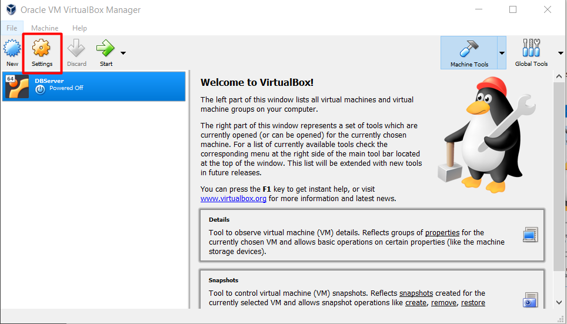
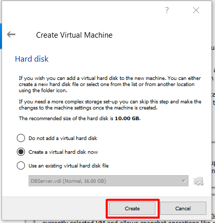
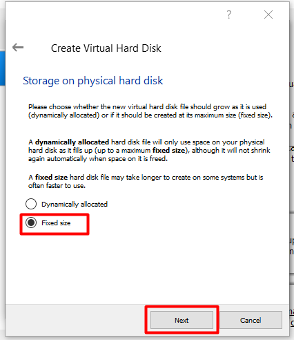
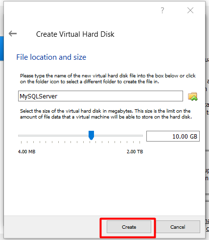

Part 1: Setting up Virtual Box
Welcome! This is part 1 of my 3 part series that will teach you how to start up an instance of MySQL server running in a Ubuntu virtual machine. This is great for when you need a temporary or non public database server for development. Before we begin though you'll need a few resources.
Download the following:
Why Desktop? Well, when it comes to Ubuntu both versions are nearly identical. The key difference is the collection of packages each includes by default. It's not required to have the desktop version, although it can be quite useful to have a GUI for when things go awry.
Once you've downloaded both VirtualBox and the Ubuntu ISO, go ahead and install VirtualBox. Since there's no special requirements for it I won't go into detail on it. Simply accept all the defaults and evverything should be okay.
With VirtualBox installed, go ahead and open it up.

While it may look simple don't be fooled as VirtualBox is quite the powerful little tool. Overall we won't have to do much to it but we do need to adjust one setting first. Click on the Settings button then navigate to the Network tab.


Double check to ensure that Bridged Adapter is selected in the Attached To drop down then click OK.

Now we'll begin creating our new virtual machine. Click the New option in the menu.

Give it a name (can be anything really), and select Linux in the Type dropdown. Ubuntu should automatically be selected for the Version dropdown but if it isn't go ahead and select it. Then click Next.

If desired, you can adjust the size of the RAM allocated for the VM. For our purposes 1024MB should be more than enough. Click Next.

Nothing to worry about on the next two pages so go ahead and click Create then Next.


To gain a (slight) performance boost we'll select the Fixed Size option.

Pick a size for your partition (10GB is perfectly fine for this example), then click Create.

It can take about a minute or so for this step to complete. It varies based on factors such as the speed of your hard drive, and how large of a partition you specified. Once complete though the VM will be ready to start and you can move on to Part 2.